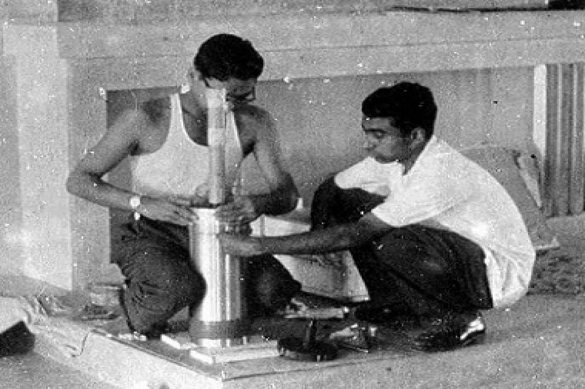

Dr. A.P.J. Abdul Kalam
The Missile Man of India

- 15 October 1931 Born in a Tamil Muslim family of Tamil Nadu.
- 1954 Graduated in Physics from the University of Madras.
- 1955 Moved to Madras to study Aerospace Engineering in Madras Institute of Technology.
- 1960 Joined Defence Research and Development Organization (DRDO) of India.
- 1965 Started working on an expandable rocket project at DRDO.
- 1969 Got transferred to Indian Space Research Organization.
- 1980 Successfully deployed the Rohini satellite in near-earth orbit as a Project Director
of India's first satellite launching vehicle SLV-III.
- 1981 Received Padma Bhushan Award.
- 1990 Received Padma Vibhushan Award for his work with DRDO and ISRO.
- 1992-1999 Served as Chief Scientific Advisor to the PM and Secretary at DRDO.
- 1997 Received Bharat Ratna Award, highest civilian honour, for his contribution to the
science research and modernization of defence technology in India.
- 1998 Played a pivotal organisational, technical and political role in India's Pokhran-II
nuclear tests.
Along with Soma Raju, developed a low cost coronary stent "Kalam-Raju Stent".
2002 Elected as 11th President of India.
Stated a desire of more united India.
- 2011 Supported the establishment of nuclear power plant in India.
- 2012 Designed a tablet computer for healthcare in rural areas, with Soma Raju.
Launched a programme called "What Can I Give Movement" to defeat corruption.
2013 Received Von Braun Award.
- 27 July 2015 Died at the age of 83. His last words to his aide were - "Funny guy! Are you
doing well?"
Do read about this irreplaceable personality here